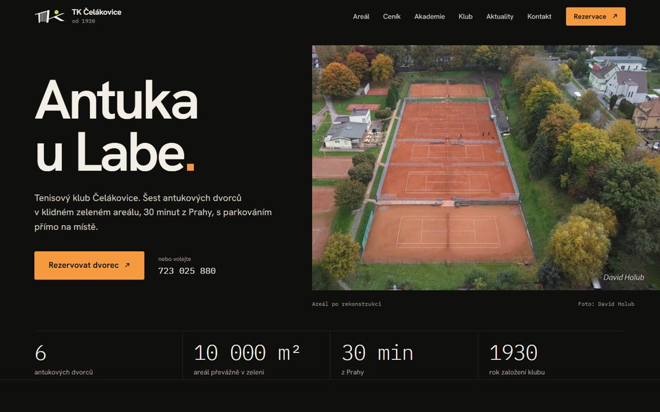
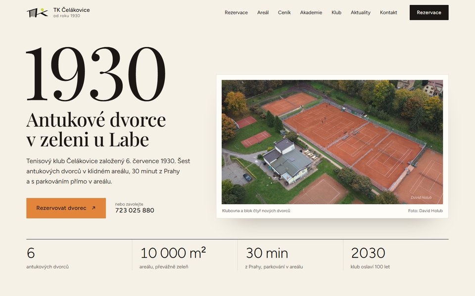

Dva návrhy úvodní stránky
01

Grafit
Tmavá moderní · rok 2025 na časové ose
Večerní a sebevědomá, oranžová v ní svítí jako světlo nad dvorci. Časová osa rekonstrukce vede od prvních prací v březnu 2025 až k novým čarám na antuce. Stačí táhnout jezdcem.
Otevřít návrh
02

Století
Světlá klasická · sto let na jedné ose
Klidná a vznešená jako klubová kronika. Pravítko sta let od založení LTK 1930 po rok 2030 ukáže milníky klubu a odpočítává dny do stých narozenin.
Otevřít návrh
Společné pro oba návrhy
- Rezervace dvorců online jedním tlačítkem, k tomu telefony, otevírací doba a hlavní pravidla hracího řádu.
- Ceník pronájmu pro nečleny i členských příspěvků, vstup do klubu a brigádní hodiny.
- Areál, Tenisová akademie a letní kempy, aktuality, výbor a historie klubu.
- Klubové logo překreslené do ostrého vektoru, jak celý ovál, tak samotný monogram TK.
- Skutečné fotky areálu, včetně nových dronových snímků Davida Holuba.
- Funguje na počítači, tabletu i mobilu.
Co ještě potřebujeme ověřit
- Ceník na současném webu platí od roku 2015 (pronájem 240 Kč za hodinu). Platí pořád? A je příspěvek školičky do 10 let opravdu 100 Kč?
- Zimní sezóna 18. 10. 2026 – 2. 4. 2027: kde a kdy se v zimě hraje a platí i v zimě otevírací doba Po–Ne 9:00–11:30 a 16:00–22:00?
- Fotky: souhlasí David Holub s použitím dronových snímků? A máte fotky hráčů, trenérů nebo turnajů?
- Akademie: má mít na webu klubu vlastní sekci, nebo jen odkaz na svůj web?